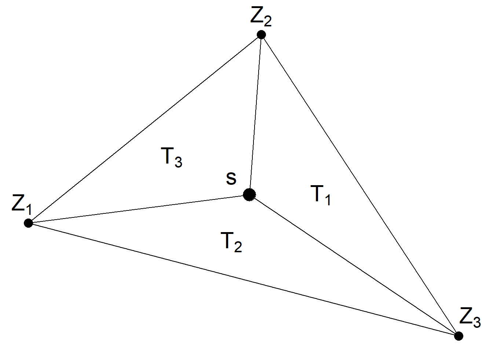

Chapter 5 INLA bayesian computation
INLA (???) stands for Integrated Nested Laplace approximation and constitutes an computational alternative to traditional MCMC method. INLA does approximate bayesian inference on special type of models called LGM latent gaussian models due to the fact that they are computationally convenient. The benefits are many: - low computational costs, even for large models- - it provides high accuracy - can define very comolex models within that framework - most important statistical models are LGM (latent gaussian models) - very good support for spatial models [ puoi parlare del big-O problem, puoi pa]
INLA uses a combiation onf analyticsa approximations and nuemrical integration to obtain an approximated prosetrior distibution of the parameters faster. the combiantion of INLA and SPDE (stochatsic partial diferential equations) allwos to analyze point level data.
5.1 LGM Latent Gaussian Models:
Given some observations \(y_{i}\) that follows exponential famoily (gaussian poisson edxponential) this observation follows a distribution that depends on some parameters and hyperparameteers. Additionally to that there exists some non gaussian hyper paramters (even though they could also be gaussian too) for which it is possibile to specify a prior. Essentially this is the definition a LGM whose general expression can be simplyfied as:
\[ \underbrace{\pi(\theta)}_{\text {prior }} \times \underbrace{\pi(\boldsymbol{x} \mid \boldsymbol{\theta})}_{\text {GMRF }} \times \underbrace{\prod_{i} \pi\left(y_{i} \mid x_{i}, \boldsymbol{\theta}\right)}_{\text {likelihood }} \]
There is a lot of structure, there are some parameters that are non gaussian but ae very low in dimension, the gaussian part generally is high in dimension and the likelihood fits data. the main part at this point is to compute margianl distribution. \(\left\{\pi\left(x_{j} \mid \boldsymbol{y}\right)\right\} \quad\) and \(\quad\left\{\pi\left(\theta_{k} \mid \boldsymbol{y}\right)\right\}\) This is going to be solved by using Integrated nested laplace approxiamtion. Many models are essentially in the cluster of LGM. An important remark regards the fact that LGM models are a way to computes inference, not a way to model data.
5.2 Latent Gaussian Models Paula Moraga
Given some observations \(y_{i}\) that follow an exponential family (Gaussian, Poisson, Exponential..) whose probability distribution depends on some parameters, hyper-parameters \(y_{i} \mid \boldsymbol{x}, \boldsymbol{\theta} \sim \pi\left(y_{i} \mid x_{i}, \boldsymbol{\theta}\right) i=1, \ldots, n\) and have a mean moment as such:\(\mu_{i}=g^{-1}\left(\eta_{i}\right)\). And then given some parameters \(\boldsymbol{x}\) that follow a gaussian distribution with mean \(\boldsymbol{\mu}\) and precision matrix \(\boldsymbol{Q}(\theta)^{-1}\) that depends only on hyperparameter. \(\boldsymbol{x} \mid \boldsymbol{\theta} \sim N\left(\boldsymbol{\mu}(\theta), \boldsymbol{Q}(\theta)^{-1}\right)\). And then ultimately also given the hyper-parameters that follow a non-gaussian (but it can be also gaussian) probability distribution for which it is possible to specify a prior. Thus if the specified model can be rewritten under these terms, the model take the name of Latent Gaussian Model. As a side note Some people choose to approach the precision matrix as a covariance function this is not encpuraged since complciates notation. However This can not be done later in thre anlyssy since Some special covariance fucntion is goint ti be itnroduced. The lienar predictor that sums up the information to include the model can be written as: \(\eta_{i}=\alpha+\sum_{k=1}^{n_{\beta}} \beta_{k} z_{k i}+\sum_{j=1}^{n_{f}} f^{(j)}\left(u_{j i}\right)\) The linear prdictor can be expressed as a sum of \(\aplha\) is gen intercept \(\beta\) are the linar effect on covariates \(z_{ki}\) on the response nad \(f\) are a set of random effecct defined in terms os some covariates \(u_{ji}\) (e.g. rw, ar1)
INla comoute the posterdior marignals for the LGF x the and the hyper param
\[ \pi\left(x_{i} \mid \boldsymbol{y}\right)=\int \pi\left(x_{i} \mid \boldsymbol{\theta}, \boldsymbol{y}\right) \pi(\boldsymbol{\theta} \mid \boldsymbol{y}) d \boldsymbol{\theta}, \pi\left(\theta_{j} \mid \boldsymbol{y}\right)=\int \pi(\boldsymbol{\theta} \mid \boldsymbol{y}) d \boldsymbol{\theta}_{-j} \]
posetriors have some integrals and ther terms insiede the i tegrals are approxiamted using la opace approximation, thye can be integrate wrt to latent parametnes. you do not need to use thsi, once you hqve the posteriro distribution you can
5.3 LGM Blangiardo
Following the notation imposed in (Marta Blangiardo 2015) and in (Moraga 2019) a reversed approach might better offer the intuition. In order to define a Latent Gaussain Model Within the bayesian framework it is convenient to specify at first, given some observations \(y_{i \ldots n}\), an exponential family (Gaussian Poisson Exponential) distribution function characterized by some parameters \(\phi_{i}\) (usually expressed by the mean \(\left.E\left(y_{i}\right)\right\)) and some other hyper-parameters \(\psi_{k}\). The parameter \(\phi_{i}\) can be defined as an additive linear predictor \(\eta_{i}\) by a link function \(g(\cdot)\), i.e. \(g\left(\phi_{i}\right)=\eta_{i}\). A comprehensive expression of the linear predictor take into account all the possible effects:
\[ \eta_{i}=\beta_{0}+\sum_{m=1}^{M} \beta_{m} x_{m i}+\sum_{l=1}^{L} f_{l}\left(z_{l i}\right) \]
where \(\beta_{0}\) is the intercept, \(\boldsymbol{\beta}=\left\{\beta_{1}, \ldots, \beta_{M}\right\}\) are the coefficient that quantifies the linear effects on covariates \(\boldsymbol{x}=\left({x}_{1}, \ldots, {x}_{M}\right)\) and \(f\) are a set of random effects defined in terms of a set of covariates \(\boldsymbol{z}=\left(z_{1}, \ldots, z_{L}\right)\) (e.g. rw, ar1). [estendibile a tanti modelli] . All the latent components can be conveniently grouped into a varibale denoted with \(\boldsymbol{\theta}\) such that. \(\boldsymbol{\theta}=\left\{\beta_{0}, \beta, f\right\}\) and the same can be done for hyper parameters: . Then the distribution probability conditioned to parameters and hyper parameters \(\boldsymbol{\psi}=\left\{\psi_{1}, \ldots, \psi_{K}\right\}\):
\[y_{i} \mid \boldsymbol{\theta}, \boldsymbol{\psi} \sim \pi\left(y_{i} \mid \boldsymbol{\theta},\boldsymbol{\psi}\right)\] and Since they are conditionally independent the joint distribution is given by the likelihood: \[p(\boldsymbol{y} \mid \boldsymbol{\theta}, \boldsymbol{\psi})=\prod_{i=1}^{n} p\left(y_{i} \mid \theta_{i}, \boldsymbol{\psi}\right)\] Each data point is connected to a linear combination of each element in \(\boldsymbol{\theta}\) latent field. A multivariate Normal distribution on \(\boldsymbol{\theta}\) is imposed centered in 0 with a precision matrix \(Q(\psi),\) i.e., \(\theta \sim \operatorname{Normal}\left(\mathbf{0}, Q^{-1}(\psi)\right)\) depending on the hyper parameter vector \(\boldsymbol{\psi}\). Therefore the density function is:
\[ p(\theta \mid \psi)=(2 \pi)^{-n / 2}|Q(\psi)|^{1 / 2} \exp \left(-\frac{1}{2} \theta^{\prime} Q(\psi) \theta\right) \]
5.4 Laplace Approximation
An alternative approach to the simulation- based MC integration is analytic approximation with the Laplace method. Suppose we are interested in computing the following integral:
\[\int f(x) \mathrm{d} x=\int \exp (\log f(x)) \mathrm{d} x\]
where \(f(x)\) is the density function of a random variable X. We represent \(log f(x)\) by means of a Taylor series expansion evaluated in x = x0:
\[\log f(x) \approx \log f\left(x_{0}\right)+\left.\left(x-x_{0}\right) \frac{\partial \log f(x)}{\partial x}\right|_{x=x_{0}}+\left.\frac{\left(x-x_{0}\right)^{2}}{2} \frac{\partial^{2} \log f(x)}{\partial x^{2}}\right|_{x=x_{0}}\]
If x0 is set equal to the mode \(x∗ = argmax\), log f(x) then log f(x)\(\left.\frac{\partial \log f(x)}{\partial x}\right|_{x=x^{*}}=0\) and the approximation becomes
\[\log f(x) \approx \log f\left(x^{*}\right)+\left.\frac{\left(x-x^{*}\right)^{2}}{2} \frac{\partial^{2} \log f(x)}{\partial x^{2}}\right|_{x=x^{*}}\]
The integral of interest is then approximated as follows:
\[\int f(x) \mathrm{d} x \approx \int \exp \left(\log f\left(x^{*}\right)+\left.\frac{\left(x-x^{*}\right)^{2}}{2} \frac{\partial^{2} \log f(x)}{\partial x^{2}}\right|_{x=x^{*}}\right) \mathrm{d} x\]
\[=\exp \left(\log f\left(x^{*}\right)\right) \int \exp \left(\left.\frac{\left(x-x^{*}\right)^{2}}{2} \frac{\partial^{2} \log f(x)}{\partial x^{2}}\right|_{x=x^{*}}\right) \mathrm{d} x\]
where the integrand can be associated with the density of a Normal distribution. In fact, by setting \[\sigma^{2 *}=-1 /\left.\frac{\partial^{2} \log f(x)}{\partial x^{2}}\right|_{x=x^{*}}\] we obtain:
\[\int f(x) \mathrm{d} x \approx \exp \left(\log f\left(x^{*}\right)\right) \int \exp \left(-\frac{\left(x-x^{*}\right)^{2}}{2 \sigma^{2 *}}\right) \mathrm{d} x\]
where the integrand is the kernel of a Normal distribution with mean equal to x∗ and variance \(\sigma^{2*}\). More precisely, the integral evaluated in the interval \((\alpha, \beta)\) is approximated by:
\[\int_{\alpha}^{\beta} f(x) \mathrm{d} x \approx f\left(x^{*}\right) \sqrt{2 \pi \sigma^{2 *}}(\Phi(\beta)-\Phi(\alpha))\]
where \(\Phi(⋅)\) denotes the cumulative density function of th \(Normal(x_i, \sigma^{2*})\) distribution.
as an example this a logistic regression xample bivariate noramle we have wo obsservation we just wna ot compute the marginal essentially whe ahv to approxiamte this integral, so what the cpmputaion twe need to do we chose a value for x 1 sand the we approxaimte thsi inegral this is how w e itntegratem to do we have to comoute the mode ant the curvature and then use laplace spproximation
[couple figures]
the point now is if you want ot have you compatiin to be smooth not any gaussian
5.5 Latent Gaussian Models
The first step in defining a latent Gaussian model within the Bayesian framework is to identify a distribution for the observed data y = (y1, … , yn). A very general approach consists in specifying a distribution for yi characterized by a parameter 𝜙i (usually the mean E(yi)) defined as a function of a structured additive predictor 𝜂i through a link function g(⋅), such that g(𝜙i) = 𝜂i. The additive linear predictor 𝜂i is defined as follows:
\[\eta_{i}=\beta_{0}+\sum_{m=1}^{M} \beta_{m} x_{m i}+\sum_{l=1}^{L} f_{l}\left(z_{l i}\right)\]
Here 𝛽0 is a scalar representing the intercept; the coefficients \(\boldsymbol{\beta}=\left\{\beta_{1}, \ldots, \beta_{M}\right\}\) quantify the (linear) effect of some covariates \(\boldsymbol{x}=\left(\boldsymbol{x}_{1}, \ldots, \boldsymbol{x}_{M}\right)\) on the response; and \(f=\left\{f_{1}(\cdot), \ldots, f_{L}(\cdot)\right\}\) is a collection of fmunctions defined in terms of a set of covariates \(z = (z_1, … , z_L)\). The terms \(f_l(⋅)\) can assume different forms such as smooth and
nonlinear effects of covariates, time trends and seasonal effects, random intercept and slopes as well as temporal or spatial random effects. For this reason, the class of latent Gaussian models is very flexible and can accomodate a wide range of models ranging from generalized and dynamic linear models to spatial and spatio-temporal models (see Martins et al., 2013 for a review). We collect all the latent (nonobservable) components of interest for the inference in a set of parameters named 𝜽 defined as \(\boldsymbol{\theta}=\left\{\beta_{0}, \boldsymbol{\beta}, \boldsymbol{f}\right\}\). Moreover, we denote with \(\psi=\left\{\psi_{1}, \ldots, \psi_{K}\right\}\) the vector of the K hyperparameters. By assuming conditional independence, the distribution of the n observations (all coming from the same distribution family) is given by the likelihood
\[p(\boldsymbol{y} \mid \boldsymbol{\theta}, \boldsymbol{\psi})=\prod_{i=1}^{n} p\left(y_{i} \mid \theta_{i}, \boldsymbol{\psi}\right)\]
where each data point yi is connected to only one element 𝜃i in the latent field \(\theta\). Martins et al. (2013) discuss the possibility of relaxing this assumption assuming that each observation may be connected with a linear combination of elements in \(\theta\); moreover, they take into account the case when the data belong to several distri- butions, i.e., the multiple likelihoods case.
We assume a multivariate Normal prior on 𝜽 with mean 𝟎 and precision matrix \(Q(\psi)\), i.e., \(\boldsymbol{\theta} \sim \operatorname{Normal}\left(\mathbf{0}, \boldsymbol{Q}^{-1}(\boldsymbol{\psi})\right)\) with density function given by
\[p(\theta \mid \psi)=(2 \pi)^{-n / 2}|Q(\psi)|^{1 / 2} \exp \left(-\frac{1}{2} \theta^{\prime} Q(\psi) \theta\right)\]
where | ⋅ | denotes the matrix determinant and ′ is used for the transpose operation. The components of the latent Gaussian field 𝜽 are supposed to be conditionally independent with the consequence that \(Q(\psi)\) is a sparse precision matrix.8 This specification is known as Gaussian Markov random field (GMRF, Rue and Held, 2005). Note that the sparsity of the precision matrix gives rise to computational ben- efits when making inference with GMRFs. In fact, linear algebra operations can be performed using numerical methods for sparse matrices, resulting in a considerable computational gain (see Rue and Held, 2005 for algorithms). The joint posterior distribution of 𝜽 and \(\psi\) is given by the product of the likelihood (4.13), of the GMRF density (4.14) and of the hyperparameter prior distribution \(p(\psi)\):
\[ \begin{aligned} p(\boldsymbol{\theta}, \boldsymbol{\psi} \mid \boldsymbol{y}) & \propto p(\boldsymbol{\psi}) \times p(\boldsymbol{\theta} \mid \boldsymbol{\psi}) \times p(\boldsymbol{y} \mid \boldsymbol{\theta}, \boldsymbol{\psi}) \\ & \propto p(\boldsymbol{\psi}) \times p(\boldsymbol{\theta} \mid \boldsymbol{\psi}) \times \prod_{i=1}^{n} p\left(y_{i} \mid \theta_{i}, \boldsymbol{\psi}\right) \\ & \propto p(\boldsymbol{\psi}) \times|\boldsymbol{Q}(\boldsymbol{\psi})|^{1 / 2} \exp \left(-\frac{1}{2} \boldsymbol{\theta}^{\prime} \boldsymbol{Q}(\boldsymbol{\psi}) \boldsymbol{\theta}\right) \times \prod_{i=1}^{n} \exp \left(\log \left(p\left(y_{i} \mid \theta_{i}, \boldsymbol{\psi}\right)\right)\right) \\ & \propto p(\boldsymbol{\psi}) \times|\boldsymbol{Q}(\boldsymbol{\psi})|^{1 / 2} \exp \left(-\frac{1}{2} \boldsymbol{\theta}^{\prime} \boldsymbol{Q}(\boldsymbol{\psi}) \boldsymbol{\theta}+\sum_{i=1}^{n} \log \left(p\left(y_{i} \mid \theta_{i}, \boldsymbol{\psi}\right)\right)\right) \end{aligned} \]
5.6 Approximate Bayesian inference with INLA
The objectives of Bayesian inference are the marginal posterior distributions for each element of the parameter vector
\[p\left(\theta_{i} \mid \boldsymbol{y}\right)=\int p\left(\theta_{i}, \boldsymbol{\psi} \mid \boldsymbol{y}\right) \mathrm{d} \boldsymbol{\psi}=\int p\left(\theta_{i} \mid \boldsymbol{\psi}, \boldsymbol{y}\right) p(\boldsymbol{\psi} \mid \boldsymbol{y}) \mathrm{d} \boldsymbol{\psi}\]
and for each element of the hyperparameter vector
\[p\left(\psi_{k} \mid \boldsymbol{y}\right)=\int p(\boldsymbol{\psi} \mid \boldsymbol{y}) \mathrm{d} \boldsymbol{\psi}_{-k}\]
Thus, we need to perform the following tasks: (i) compute \(p(\boldsymbol{\psi} \mid \boldsymbol{y})\), from which also all the relevant marginals p(𝜓k|y) can be obtained; (ii) compute \(p\left(\theta_{i} \mid \boldsymbol{\psi}, \boldsymbol{y}\right)\) which is needed to compute the parameter marginal posteriors \(p\left(\theta_{i} \mid \boldsymbol{y}\right)\)
The INLA approach exploits the assumptions of the model to produce a numerical approximation to the posteriors of interest based on the Laplace approximation method introduced in Section 4.7 (Tierney and Kadane, 1986). The first task (i) consists of the computation of an approximation to the joint posterior of the hyperparameters as:
\[\begin{aligned} p(\boldsymbol{\psi} \mid \boldsymbol{y}) &=\frac{p(\boldsymbol{\theta}, \boldsymbol{\psi} \mid \boldsymbol{y})}{p(\boldsymbol{\theta} \mid \boldsymbol{\psi}, \boldsymbol{y})} \\ &=\frac{p(\boldsymbol{y} \mid \boldsymbol{\theta}, \boldsymbol{\psi}) p(\boldsymbol{\theta}, \boldsymbol{\psi})}{p(\boldsymbol{y})} \frac{1}{p(\boldsymbol{\theta} \mid \boldsymbol{\psi}, \boldsymbol{y})} \\ &=\frac{p(\boldsymbol{y} \mid \boldsymbol{\theta}, \boldsymbol{\psi}) p(\boldsymbol{\theta} \mid \boldsymbol{\psi}) p(\boldsymbol{\psi})}{p(\boldsymbol{y})} \frac{1}{p(\boldsymbol{\theta} \mid \boldsymbol{\psi}, \boldsymbol{y})} \\ & \propto \frac{p(\boldsymbol{y} \mid \boldsymbol{\theta}, \boldsymbol{\psi}) p(\boldsymbol{\theta} \mid \boldsymbol{\psi}) p(\boldsymbol{\psi})}{p(\boldsymbol{\theta} \mid \boldsymbol{\psi}, \boldsymbol{y})} \\ &\left.\approx \frac{p(\boldsymbol{y} \mid \boldsymbol{\theta}, \boldsymbol{\psi}) p(\boldsymbol{\theta} \mid \boldsymbol{\psi}) p(\boldsymbol{\psi})}{\tilde{p}(\boldsymbol{\theta} \mid \boldsymbol{\psi}, \boldsymbol{y})}\right|_{\boldsymbol{\theta}=\boldsymbol{\theta}^{*} \boldsymbol{\psi}}=: \tilde{p}(\boldsymbol{\psi} \mid \boldsymbol{y}) \end{aligned}\]
where \(\tilde{p}(\theta \mid \psi, y)\) is the Gaussian approximation – given by the Laplace method – of \(p(\theta \mid \psi, y)\) and \(\theta^{*}(\psi)\) is the mode for a given \(\psi\) the Gaussian approximation turns out to be accurate since \(p(\theta \mid \psi, y)\)appears to be almost Gaussian as it is a priori dis- tributed like a GMRF, y is generally not informative and the observation distribution is usually well-behaved. The second task (ii) is slightly more complex, because in general there will be more elements in 𝜽 than in 𝝍, and thus this computation is more expensive. A first easy possibility is to approximate the posterior conditional distributions \(p(\theta \mid \psi, y)\) directly as the marginals from \(\tilde{p}(\theta \mid \psi, y)\) i.e. using a Normal distribution, where the Cholesky decomposition is used for the precision matrix (Rue and Martino, 2007). While this is very fast, the approximation is generally not very good. The second possibility is to rewrite the vector of parameters as \(\theta=\left(\theta_{i}, \theta_{-i}\right)\) and use again Laplace approximation to obtain
\[\begin{aligned} p\left(\theta_{i} \mid \boldsymbol{\psi}, \boldsymbol{y}\right) &=\frac{p\left(\left(\theta_{i}, \boldsymbol{\theta}_{-i}\right) \mid \boldsymbol{\psi}, \boldsymbol{y}\right)}{p\left(\boldsymbol{\theta}_{-i} \mid \theta_{i}, \boldsymbol{\psi}, \boldsymbol{y}\right)} \\ &=\frac{p(\boldsymbol{\theta}, \boldsymbol{\psi} \mid \boldsymbol{y})}{p(\boldsymbol{\psi} \mid \boldsymbol{y})} \frac{1}{p\left(\boldsymbol{\theta}_{-i} \mid \theta_{i}, \boldsymbol{\psi}, \boldsymbol{y}\right)} \\ & \propto \frac{p(\boldsymbol{\theta}, \boldsymbol{\psi} \mid \boldsymbol{y})}{p\left(\boldsymbol{\theta}_{-i} \mid \theta_{i}, \boldsymbol{\psi}, \boldsymbol{y}\right)} \\ &\left.\approx \frac{p(\boldsymbol{\theta}, \boldsymbol{\psi} \mid \boldsymbol{y})}{\tilde{p}\left(\boldsymbol{\theta}_{-i} \mid \theta_{i}, \boldsymbol{\psi}, \boldsymbol{y}\right)}\right|_{\boldsymbol{\theta}_{-i}=\boldsymbol{\theta}_{-i}^{*}\left(\theta_{i}, \boldsymbol{\psi}\right)}=: \tilde{p}\left(\theta_{i} \mid \boldsymbol{\psi}, \boldsymbol{y}\right) \end{aligned}\]
where \(\tilde{p}\left(\boldsymbol{\theta}_{-i} \mid \theta_{i}, \boldsymbol{\psi}, \boldsymbol{y}\right)\) is the Laplace Gaussian approximation to \(p\left(\boldsymbol{\theta}_{-i} \mid \theta_{i}, \boldsymbol{\psi}, \boldsymbol{y}\right)\) and \(\boldsymbol{\theta}_{-i}^{*}\left(\theta_{i}, \boldsymbol{\psi}\right)\) is its mode. Because the random variables \(\theta_{-i} \mid \theta_{i}, \psi, y\) re in general reasonably Normal, the approximation provided by (4.20) typically works very well. This strategy, however, can be very expensive in computational terms as \(\tilde{p}\left(\theta_{-i} \mid \theta_{i}, \psi, y\right)\) must be recomputed for each value of 𝜽 and 𝝍 (some modifications to the Laplace approximation in order to reduce the computational costs are described in Rue et al., 2009).
Operationally, INLA proceeds as follows: (i) first it explores the hyperparameter joint posterior distribution \(\tilde{p}(\psi \mid \boldsymbol{y})\) of Eq. (4.18) in a nonparametric way, in order to detect good points \(\left\{\psi^{(j)}\right\}\) for the numerical integration required in Eq. (4.22). Rue et al. (2009) propose two different exploration schemes, both requiring a reparameterization of the \(\psi\)-space – in order to deal with more regular densities – through the following steps:
- Locate the mode \(\psi^{*}\) of \(\tilde{p}(\boldsymbol{\psi} \mid \boldsymbol{y})\) by optimizing log \(\tilde{p}(\boldsymbol{\psi} \mid \boldsymbol{y})\) with respect to 𝝍 (e.g., through the Newton–Raphson method).
- Compute the negative Hessian \(H\) at the modal configuration.
- Compute the eigen-decomposition \(\mathbf{\Sigma}=\boldsymbol{V} \Lambda^{1 / 2} \boldsymbol{V}^{\prime}\), with \(\Sigma=H^{-1}\).
- Define the new variable z, with standardized and mutually orthogonal components, such that:
\[\boldsymbol{\psi}(z)=\boldsymbol{\psi}^{*}+\boldsymbol{V} \Lambda^{1 / 2} z\]
The first exploration scheme (named grid strategy) builds, using the z-parameterization, a grid of points associated with the bulk of the mass of \(\tilde{p}(\boldsymbol{\psi} \mid \boldsymbol{y})\) . This approach has a computational cost which grows exponentially with the number of hyperparameters; therefore the advice is to adopt it when K, the dimension of \(\psi\), is lower than 4. Otherwise, the second explo- ration scheme, named central composite design (CCD) strategy, should be used as it reduces the computational costs. With the CCD approach, the integration problem is seen as a design problem; using the mode \(\psi^{*}\) and the Hessian H, some relevant points in the 𝝍-space are selected for performing a second-order approximation to a response variable (see Section 6.5 of Rue et al., 2009 for details). In general, the CCD strategy uses much less points, but still is able to capture the variability of the hyperparameter distribution. For this reason it is the default option in R-INLA.
5.7 The Projector Matrix
We need to construct a projection matrix A to project the GRF from the observations to thetriangulation vertices. The matrix A as the number of rows equal to the number of observations, and the number of columns equal to the number of vertices of the triangulation. Row \(i\) of A corresponding to an observation at location \(s_{i}\) ossibly has three non-zero values at the columns that correspond to the vertices of the triangle that contains the location. If \(s_{i}\) within the triangle, these values are equal to the barycentric coordinates. That is, they are proportional to the areas of each of the three subtriangles defined by the location \(s_{i}\)
and the triangle’s vertices, and sum to 1. If \(s_{i}\) s equal to a vertex of the triangle, row
\(i\) has just one non-zero value equal to 1 at the column that corresponds to the vertex. Intuitively, the value \(Z(\boldsymbol{s})\) at a location that lies within one triangle is the projection of the plane formed by the triangle vertices weights at location \(s\) .
An example of a projection matrix is given below. This projection matrix projects \(n\) observations to \(G\) triangulation vertices. The first row of the matrix corresponds to an observation with location that coincides with vertex number 3. The second and last rows correspond to observations with locations lying within triangles.
\(4=\left[\begin{array}{ccccc}A_{11} & A_{12} & A_{13} & \ldots & A_{1 G} \\ A_{21} & A_{22} & A_{23} & \ldots & A_{2 G} \\ \vdots & \vdots & \vdots & \ddots & \vdots \\ A_{n 1} & A_{n 2} & A_{n 3} & \ldots & A_{n G}\end{array}\right]=\left[\begin{array}{ccccc}0 & 0 & 1 & \ldots & 0 \\ A_{21} & A_{22} & 0 & \ldots & A_{2 G} \\ \vdots & \vdots & \vdots & \ddots & \vdots \\ A_{n 1} & A_{n 2} & A_{n 3} & \ldots & 0\end{array}\right]\)
igure 8.6 shows a location \(s\) that lies within one of the triangles of a triangulated mesh. The value of the process \(Z(\cdot)\) at \(s\) is expressed as a weighted average of the values of the process at the vertices of the triangle (\(Z_{1}\), \(Z_{2}\) and \(Z_{3}\))and with weights equal to \(T_{1} / T\), \(T_{2} / T\) and \(T_{3} / T\) where \(T\)denotes the area of the big triangle that contains \(s\) and \(T_{1}\), \(T_{2}\) and \(T_{3}\) are the areas of the subtriangles
\(Z(\boldsymbol{s}) \approx \frac{T_{1}}{T} Z_{1}+\frac{T_{2}}{T} Z_{2}+\frac{T_{3}}{T} Z_{3}\)

R-INLA provides the inla.spde.make.A() function to easily construct a projection matrix A
We create the projection matrix of our example by using inla.spde.make.A() passing the triangulated mesh mesh and the coordinates coo.
A <- inla.spde.make.A(mesh = mesh, loc = coo)References
Marta Blangiardo, Michela Cameletti. 2015. Spatial and Spatio-Temporal Bayesian Models with R-Inla. Wiley.
Moraga, Paula. 2019. Geospatial Health Data. Chapman; Hall/CRC. https://doi.org/10.1201/9780429341823.